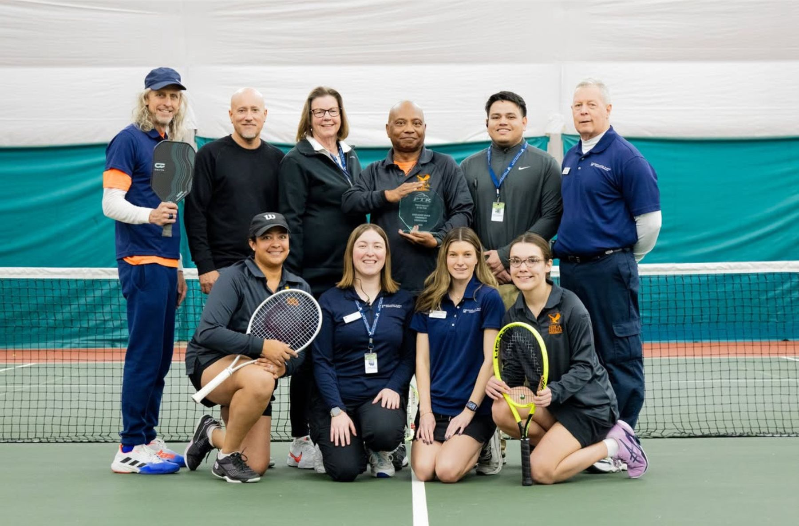
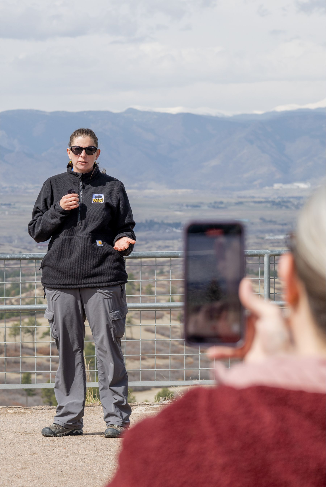
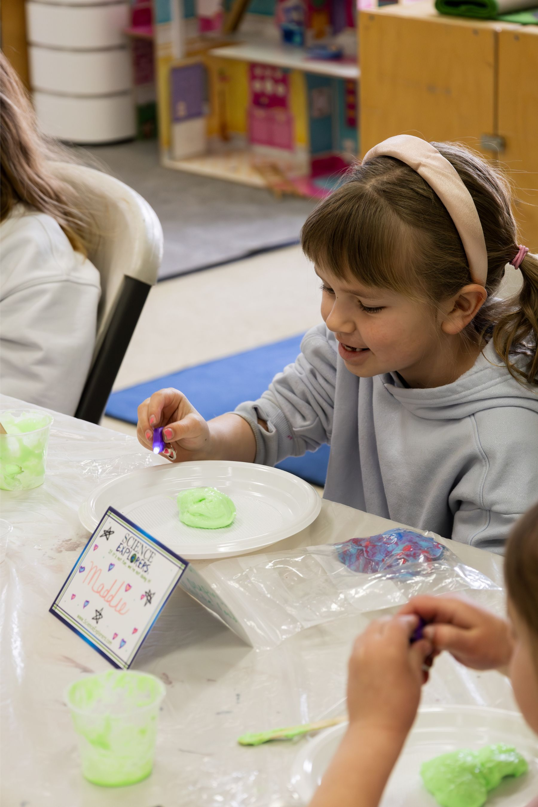
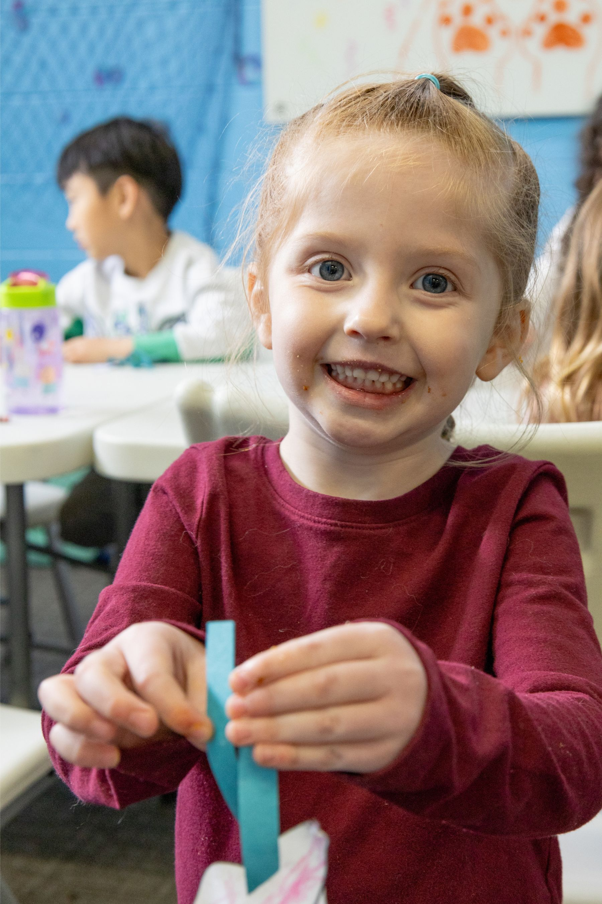
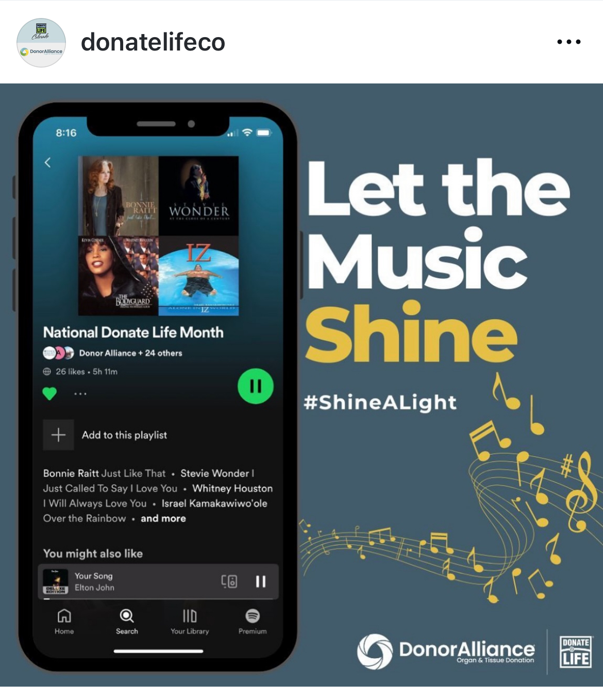
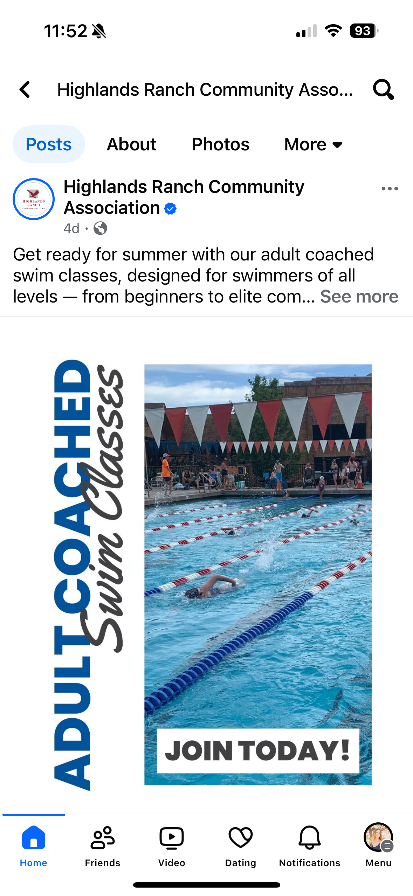
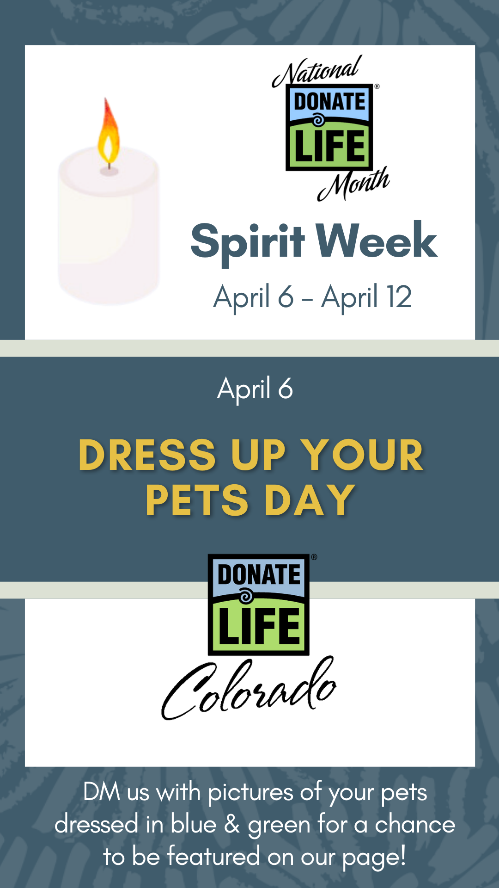

Production & Visual
Video & Photography
I directed, scripted, and filmed these productions for Donor Alliance, with post-production supported by a freelance editor. Click any video to watch.

Donor Dash 2023Donor Alliance

Will Doctors Still Save My Life If I'm a Registered Organ Donor?Donor Alliance

How Kidney Donation Gave this Father and Son More Time TogetherDonor Alliance




Social Media
Strategy-led social content across platforms, from awareness campaigns to community-building series. Mission-driven work designed to connect with real people.

"Let the Music Shine" -- National Donate Life Month campaign cross-promoting a curated Spotify playlist to build awareness and community engagement around organ donation.

Scroll-stopping creative for HRCA's adult coached swim program. Bold typography paired with action photography to drive sign-ups ahead of summer.

Spirit Week series for National Donate Life Month. Daily themed prompts encouraged followers to participate and share, driving organic reach and story views.
Activity guide promo video planned, filmed, and edited to highlight HRCA's seasonal programming and drive community awareness.
Summer camps promotional video produced end-to-end. Optimized for Facebook and Instagram to drive camp enrollment.